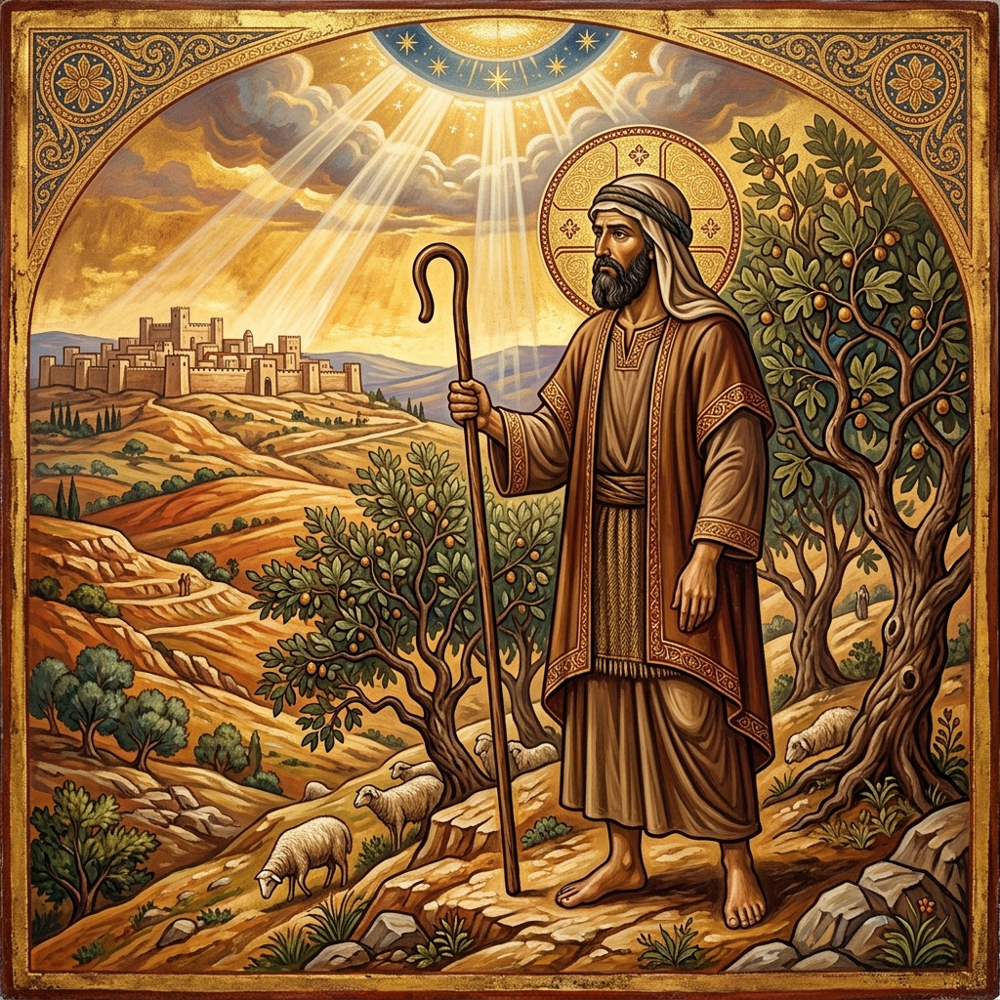
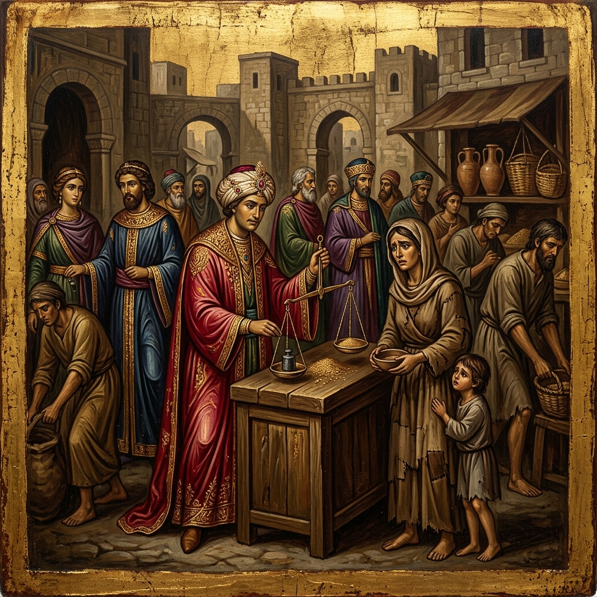
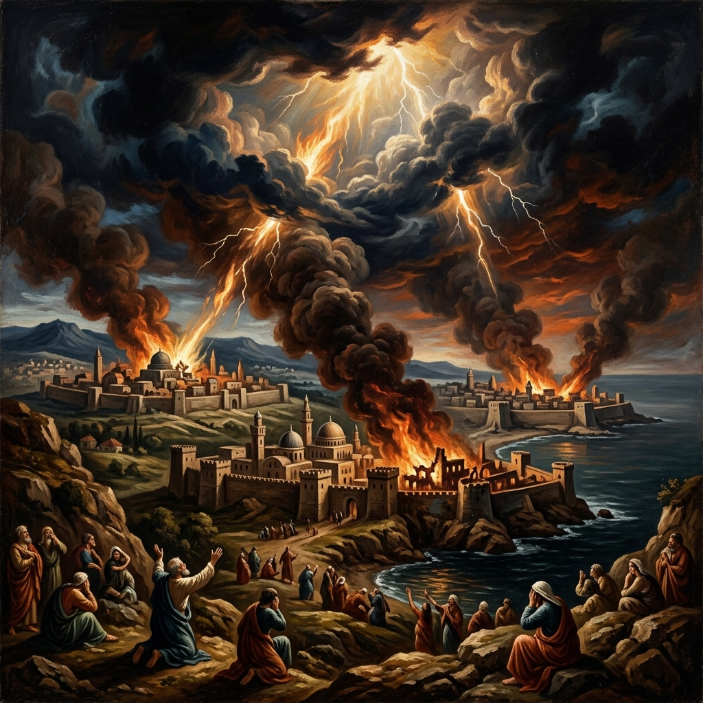
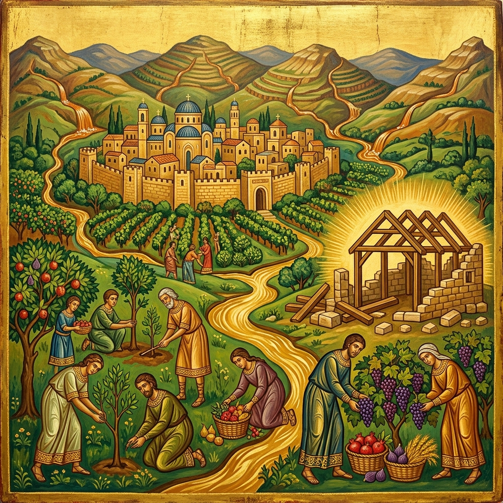
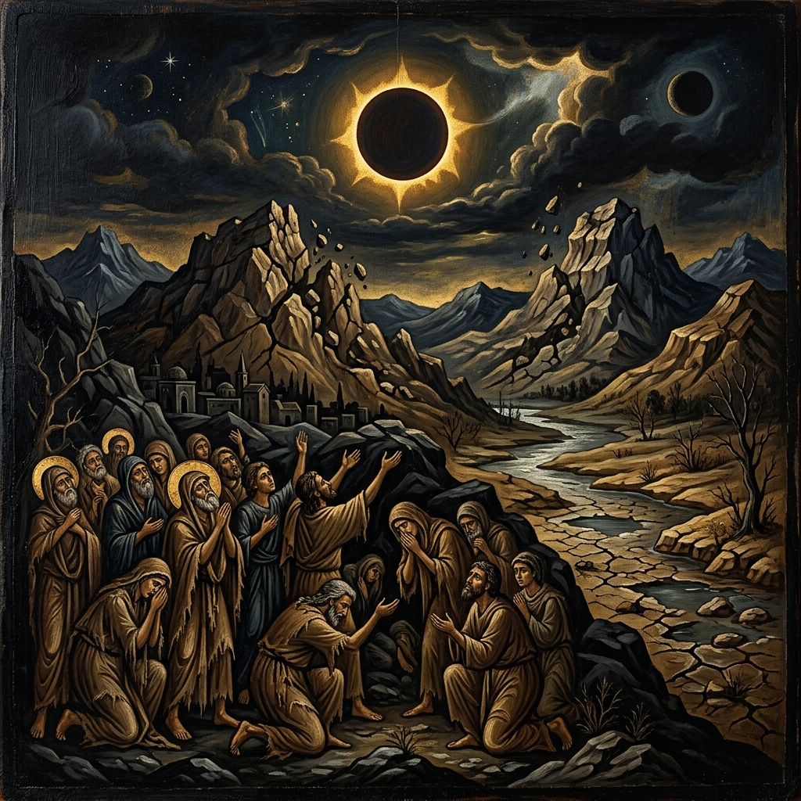
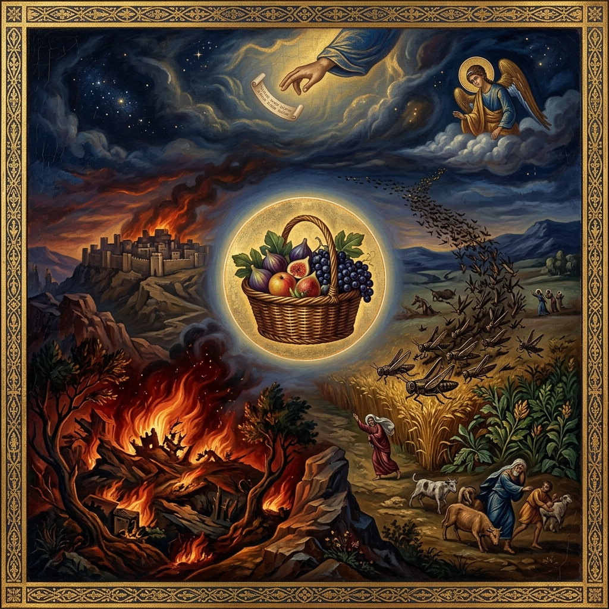

A Coptic Orthodox Study
Chapters 1 — 9
A shepherd's thundering cry for justice, a divine warning against complacency, and the promise of restoration — explored through the lens of the Church Fathers and the Coptic Orthodox Tradition.
At a Glance
Chapters 1–2
God's righteous judgement sweeps across eight nations — Damascus, Gaza, Tyre, Edom, Ammon, Moab — before turning devastatingly upon Judah and Israel themselves. "For three transgressions… and for four."
Chapters 3–4
Greater privilege demands greater accountability. God charges Israel with oppressing the poor, corrupting justice, and ignoring repeated divine warnings — famine, drought, plague — yet "you did not return to Me."
Chapters 5–6
"Seek the LORD and live." Amos overturns Israel's presumptuous expectation of the Day of the Lord: it will be darkness, not light. Woe to those at ease in Zion, feasting while the nation crumbles.
Chapters 7–8
Locusts, fire, a plumb line, a basket of summer fruit, and the Lord at the altar — five visions of judgement escalating from intercessory mercy to irreversible decree. "The end has come upon My people Israel."
Chapter 9
No sinner can escape God's hand. Yet the book ends with radiant hope: God will raise up the fallen tabernacle of David, and "the mountains shall drip with sweet wine." A promise fulfilled in Christ and His Church.
Prophetic Context

The Prophet Amos
A shepherd and dresser of sycamore figs from the Judean village of Tekoa. Not a prophet by profession nor the son of a prophet — but called directly by God to prophesy against the Northern Kingdom of Israel during the reign of Jeroboam II.
c. 760–750 BCReign of Jeroboam II
Under Jeroboam II, the Northern Kingdom enjoyed unprecedented wealth, military expansion, and territorial gain. But beneath the surface, society was rotting — the rich exploited the poor, justice was corrupted, and worship was empty ritualism.
c. 786–746 BC
The Prophetic Confrontation
Amos confronted the corrupt worship at Bethel — the royal sanctuary. Amaziah the priest tried to silence him, but Amos declared: "I was no prophet… but the LORD took me as I followed the flock, and the LORD said to me, 'Go, prophesy to My people Israel.'"
c. 755 BC
Fulfilment of Amos's Prophecy
Amos's warnings came to pass. Within a generation, the Assyrian Empire under Shalmaneser V and Sargon II conquered Samaria, deported the ten tribes, and ended the Northern Kingdom forever. "The end has come upon My people Israel" (8:2).
722 BC
Fulfilment of Amos 9:11
"I will raise up the tabernacle of David, which has fallen down." St. James cited this verse at the Council of Jerusalem (Acts 15:16–17) as proof that the Gentiles' inclusion in the Church is the fulfilment of Amos's eschatological promise.
c. AD 49 — Council of JerusalemIn-Depth Study
Chapters 1–2
Amos opens with a masterful rhetorical strategy. Using the formulaic pattern "For three transgressions… and for four, I will not turn away its punishment", God first pronounces judgement on Israel's pagan neighbours — Damascus for cruelty in Gilead, Gaza for slave-trading, Tyre for betraying a covenant of brotherhood, Edom for relentless hatred, Ammon for atrocities against pregnant women, and Moab for desecrating a king's bones.
Israel's audience would have cheered each condemnation. Then the trap closes: God turns the same formula upon Judah for despising the Law, and upon Israel herself — for selling the righteous for silver, trampling the poor, and profaning God's holy name. The sins of Israel are not merely infractions but covenant betrayal: "I brought you up from the land of Egypt… I raised up some of your sons as prophets" — yet "you gave the Nazirites wine to drink, and commanded the prophets, 'Do not prophesy!'"
"The LORD roars from Zion, and utters His voice from Jerusalem; the pastures of the shepherds mourn, and the top of Carmel withers."
Amos 1:2
"They sell the righteous for silver, and the poor for a pair of sandals. They pant after the dust of the earth which is on the head of the poor, and pervert the way of the humble."
Amos 2:6–7
"I brought you up from the land of Egypt, and led you forty years through the wilderness, to possess the land of the Amorite. I raised up some of your sons as prophets, and some of your young men as Nazirites."
Amos 2:10–11
Chapters 3–4
Chapter 3 establishes a devastating principle: "You only have I known of all the families of the earth; therefore I will punish you for all your iniquities." Election does not guarantee immunity from judgement — it intensifies accountability. God does nothing without revealing His secrets to His servants the prophets. Amos then describes the luxury of Samaria's elite: their "houses of ivory," their winter and summer houses — all to be destroyed.
Chapter 4 contains one of the most scathing passages in all of Scripture. Amos addresses the wealthy women of Samaria as "cows of Bashan" — who oppress the poor and crush the needy while demanding luxury from their husbands. God then recounts a devastating litany of five ignored warnings: famine ("cleanness of teeth"), drought, blight and mildew, plague and war, and destruction "as God overthrew Sodom and Gomorrah" — each ending with the haunting refrain: "Yet you have not returned to Me."
"You only have I known of all the families of the earth; therefore I will punish you for all your iniquities."
Amos 3:2
"Surely the Lord GOD does nothing, unless He reveals His secret to His servants the prophets."
Amos 3:7
"'I gave you cleanness of teeth in all your cities… I also withheld rain from you… I blasted you with blight and mildew… I sent among you a plague after the manner of Egypt… I overthrew some of you, as God overthrew Sodom and Gomorrah… Yet you have not returned to Me,' says the LORD."
Amos 4:6–11
"Therefore thus will I do to you, O Israel; because I will do this to you, prepare to meet your God, O Israel!"
Amos 4:12

Chapters 5–6
Chapter 5 begins with a funeral lament over Israel — "The virgin of Israel has fallen; she will rise no more." Yet even now, God pleads: "Seek Me and live" — "seek good and not evil, that you may live; so the LORD God of hosts will be with you, as you have spoken." This is the heart of Amos: God desires repentance, not destruction.
Then comes the prophetic earthquake. Israel eagerly anticipated the Day of the LORD as a day of national triumph — but Amos shatters this presumption: "Woe to you who desire the day of the LORD! For what good is the day of the LORD to you? It will be darkness, and not light." God rejects their feasts, assemblies, and songs: "Let justice run down like water, and righteousness like a mighty stream." Chapter 6 pronounces woe upon those "at ease in Zion" who feast on lambs and sing idle songs while the nation rots beneath them.
"Seek the LORD and live, lest He break out like fire in the house of Joseph, and devour it, with no one to quench it in Bethel."
Amos 5:6
"Woe to you who desire the day of the LORD! For what good is the day of the LORD to you? It will be darkness, and not light. It will be as though a man fled from a lion, and a bear met him!"
Amos 5:18–19
"I hate, I despise your feast days, and I do not savor your sacred assemblies… But let justice run down like water, and righteousness like a mighty stream."
Amos 5:21, 24
"Woe to you who are at ease in Zion… who lie on beds of ivory, stretch out on your couches, eat lambs from the flock… who sing idly to the sound of stringed instruments… but are not grieved for the affliction of Joseph!"
Amos 6:1, 4–6
Prophetic Reversal
Amos 5:18–20 contains one of the most revolutionary theological statements in the Old Testament. Israel expected the Day of the LORD to be their vindication — instead, Amos reveals it as judgement upon God's own people. This prophetic reversal reshaped all subsequent eschatology.
"Woe to you who desire the day of the LORD! For what good is the day of the LORD to you? It will be darkness, and not light. It will be as though a man fled from a lion, and a bear met him! Or as though he went into the house, leaned his hand on the wall, and a serpent bit him! Is not the day of the LORD darkness, and not light? Is it not very dark, with no brightness in it?"
Amos 5:18–20
Israel assumed that as God's chosen people, the Day of the LORD would bring destruction upon their enemies and glory to themselves. Amos shatters this presumption — covenant privilege without covenant obedience brings judgement, not blessing.
God declares He "hates" and "despises" their religious festivals because they are disconnected from righteousness. True worship is inseparable from justice and mercy: "Let justice run down like water" — not a trickle but a torrent, unstoppable and life-giving.
The ultimate "Day of the LORD" came at Golgotha — when darkness covered the land for three hours (Matthew 27:45) as God's judgement fell upon sin itself. Christ bore the darkness so that believers might walk in the light. The final Day remains ahead (2 Peter 3:10).
The Coptic Church reads Amos's "Day of the LORD" as a warning against false assurance and empty ritualism. Fr. Tadros Y. Malaty writes that Amos teaches the Church that liturgical worship without a life of justice and love for the poor is an abomination to God. The Coptic Liturgy itself echoes this: before the Fraction, the priest prays for "righteousness and mercy" — because the Eucharist demands that we be reconciled with our brothers and live justly. God does not desire sacrifices detached from transformed hearts.

Chapters 7–8
The final section of Amos unfolds through five dramatic visions. In the first two — locusts devouring the crops and a consuming fire — Amos successfully intercedes: "O Lord GOD, forgive, I pray!" and the LORD relents. But with the third vision, the plumb line, intercession ceases: "I will not pass by them anymore." God has measured Israel and found her crooked beyond repair.
Between the third and fourth visions, the narrative records Amos's confrontation with Amaziah the priest of Bethel, who orders him to leave: "Go, you seer! Flee to the land of Judah!" Amos's response is one of the most powerful prophetic declarations: "I was no prophet, nor was I a son of a prophet, but I was a sheepbreeder and a tender of sycamore fruit. Then the LORD took me…" The fourth vision — a basket of summer fruit (קַיִץ, qayits) — is a wordplay on "the end" (קֵץ, qets): "The end has come upon My people Israel." The fifth vision at the altar declares inescapable judgement.
"And the LORD said to me, 'Amos, what do you see?' And I said, 'A plumb line.' Then the Lord said: 'Behold, I am setting a plumb line in the midst of My people Israel; I will not pass by them anymore.'"
Amos 7:8
"I was no prophet, nor was I a son of a prophet, but I was a sheepbreeder and a tender of sycamore fruit. Then the LORD took me as I followed the flock, and the LORD said to me, 'Go, prophesy to My people Israel.'"
Amos 7:14–15
"Then the LORD said to me, 'The end has come upon My people Israel; I will not pass by them anymore. And the songs of the temple shall be wailing in that day,' says the Lord GOD."
Amos 8:2–3
"'Behold, the days are coming,' says the Lord GOD, 'that I will send a famine on the land, not a famine of bread, nor a thirst for water, but of hearing the words of the LORD.'"
Amos 8:11
Prophetic Visions
Chapters 7–9 present five visions that chart a trajectory from divine mercy to irreversible judgement. In the first two, Amos intercedes and God relents. From the third onward, intercession is no longer possible:
God forms a swarm of locusts to devour the crops. Amos cries: "O Lord GOD, forgive!" — and the LORD relents. Mercy prevails.
Amos 7:1–3God calls for judgement by fire that devours the great deep and the land. Again Amos intercedes: "O Lord GOD, cease!" — and the LORD relents.
Amos 7:4–6The LORD stands beside a wall with a plumb line — measuring Israel against His standard. "I will not pass by them anymore." Intercession ceases.
Amos 7:7–9A basket of ripe summer fruit (קַיִץ) — a wordplay on "the end" (קֵץ). "The end has come upon My people Israel." The fruit is ripe; the judgement is imminent.
Amos 8:1–3The LORD stands beside the altar commanding destruction. No one can flee or hide — "though they dig into Sheol… though they climb up to heaven." Total, inescapable judgement.
Amos 9:1–4The five visions of Amos illustrate a profound spiritual principle: God's patience is real but not infinite. The Coptic Fathers teach that the first two visions show God's willingness to relent when His servants intercede — recalling Moses, Abraham, and the saints who stand before God on behalf of the world. But the plumb line reveals that there comes a point when the measure of iniquity is full. St. Cyril of Alexandria reads the plumb line as God's righteous standard — ultimately Christ Himself, the true measure of holiness against whom every soul is tested.
Chapter 9
The final chapter opens with terrifying judgement — the LORD standing beside the altar, commanding: "Strike the doorposts, that the thresholds may shake." No hiding place exists: not in Sheol, nor on the top of Carmel, nor in the depths of the sea. God's eyes are upon the sinful kingdom for destruction.
Yet even here, judgement is not total annihilation but divine sifting: "I will sift the house of Israel among all nations, as grain is sifted in a sieve; yet not the smallest grain shall fall to the ground." Then the book explodes into its glorious finale — the restoration prophecy: "On that day I will raise up the tabernacle of David, which has fallen down." The mountains shall drip with sweet wine, the captives shall return, and God will plant His people in their land "never again to be pulled up." St. James, at the Council of Jerusalem, cited this passage as the scriptural basis for the inclusion of the Gentiles in the Church (Acts 15:16–17).
"'Behold, the eyes of the Lord GOD are on the sinful kingdom, and I will destroy it from the face of the earth; yet I will not utterly destroy the house of Jacob,' says the LORD. 'For surely I will command, and will sift the house of Israel among all nations, as grain is sifted in a sieve; yet not the smallest grain shall fall to the ground.'"
Amos 9:8–9
"'On that day I will raise up the tabernacle of David, which has fallen down, and repair its damages; I will raise up its ruins, and rebuild it as in the days of old; that they may possess the remnant of Edom, and all the Gentiles who are called by My name,' says the LORD who does this thing."
Amos 9:11–12
"'Behold, the days are coming,' says the LORD, 'when the plowman shall overtake the reaper, and the treader of grapes him who sows seed; the mountains shall drip with sweet wine, and all the hills shall flow with it.'"
Amos 9:13
"'I will plant them in their land, and no longer shall they be pulled up from the land I have given them,' says the LORD your God."
Amos 9:15
Messianic Fulfilment
This passage is one of the most important Old Testament prophecies cited in the New Testament. St. James used it at the Council of Jerusalem (Acts 15:16–17) to demonstrate that the Gentiles' entry into the Church was foretold by the prophets and is the fulfilment of God's ancient promise.
"On that day I will raise up the tabernacle of David, which has fallen down, and repair its damages; I will raise up its ruins, and rebuild it as in the days of old; that they may possess the remnant of Edom, and all the Gentiles who are called by My name."
Amos 9:11–12
The "tabernacle" (סֻכַּת, sukkat) — not a temple but a humble booth — refers to the fallen Davidic kingdom. After the exile, the royal line of David had no throne, no palace, no kingdom. It had collapsed to a mere "booth." Yet God promises to raise it up.
The "raising up" is fulfilled in the Incarnation and Resurrection of Christ, the true Son of David. His kingdom is not of this world but is the universal Church — the restored tabernacle that welcomes all nations. "He will reign over the house of Jacob forever" (Luke 1:33).
"All the Gentiles who are called by My name" — St. James interpreted this as the prophetic basis for receiving Gentile converts without requiring circumcision (Acts 15:16–19). The Church is the fulfilment of Amos's vision: Jew and Gentile united in the one Body of Christ.
"Simon has declared how God at the first visited the Gentiles to take out of them a people for His name. And with this the words of the prophets agree, just as it is written: 'After this I will return and will rebuild the tabernacle of David, which has fallen down.'"
Acts 15:14–16 (St. James citing Amos 9:11)
The Coptic Church reads Amos 9:11–12 as a prophecy of the universal Church — the restored kingdom of God that embraces all peoples. St. Cyril of Alexandria interprets the "tabernacle of David" as the human nature of Christ, which was "fallen" through the fall of Adam and "raised up" through the Incarnation. The "ruins" are repaired through redemption, and the Gentiles are called to share in this restoration. Fr. Tadros Y. Malaty notes that the Coptic Church's mission to Egypt, Africa, and the world is itself a fulfilment of this prophecy — the tabernacle of David extended to the ends of the earth through the Gospel preached by St. Mark and his successors.
Comparative Reference
| Theme | Chapters | Key Verse | Fulfilment in Christ |
|---|---|---|---|
| God's Roar of Judgement | 1–2 | "The LORD roars from Zion" (1:2) | Christ the Judge (Matthew 25:31–46) |
| Social Justice | 2, 4, 5, 8 | "They sell the righteous for silver" (2:6) | Christ sold for thirty pieces (Matthew 26:15) |
| Privilege & Accountability | 3 | "You only have I known… therefore I will punish" (3:2) | "To whom much is given, much required" (Luke 12:48) |
| Ignored Warnings | 4 | "Yet you have not returned to Me" (4:6–11) | "O Jerusalem… how often I wanted to gather you" (Matthew 23:37) |
| Day of the LORD | 5 | "It will be darkness, not light" (5:18) | Darkness at Golgotha (Matthew 27:45) |
| Justice as True Worship | 5 | "Let justice run down like water" (5:24) | Christ cleansing the Temple (John 2:14–16) |
| The Plumb Line | 7 | "I am setting a plumb line" (7:8) | Christ the standard of holiness |
| Famine of the Word | 8 | "A famine… of hearing the words of the LORD" (8:11) | Christ the Living Word (John 1:1, 14) |
| Restoration of David's Tabernacle | 9 | "I will raise up the tabernacle of David" (9:11) | The Church — Acts 15:16–17 |
Patristic Witnesses
"The plumb line is the standard of divine righteousness. God measured Israel and found her walls crooked — leaning away from justice, mercy, and truth. When God sets a plumb line in the midst of His people, He measures them against His own nature, for He alone is the true standard of all righteousness."
— Commentary on the Twelve Prophets, on Amos 7:7–8
"Amos, though a shepherd and a dresser of sycamore trees, was chosen by God to prophesy. This shows that God does not look at outward distinctions but at the heart. The unlearned shepherd put to shame the priests and professional prophets, for he spoke not from human wisdom but from the Spirit of God."
— Preface to Commentary on Amos
"When Amos says, 'Let justice run down like water,' he teaches that justice must not be a measured trickle, administered sparingly and with partiality, but an overwhelming, unstoppable flood that sweeps away every form of oppression and fills every part of society."
— Homilies on the Statues, Homily 2
"The rich who oppress the poor, of whom Amos speaks, are like those who take common goods and then claim them as their own. If each one would take only what he needs and leave the rest to those in want, no one would be rich and no one would be poor."
— Homily on the Words 'I Will Pull Down My Barns', §7
"The name 'Amos' means 'burden-bearer.' He bore the burden of God's message to a complacent nation. He was a simple man — a shepherd, not a professional prophet — yet God chose him to carry the heaviest message. This is the way of God: He uses the humble to confound the wise, the poor to judge the rich, the countryside to rebuke the capital."
— Commentary on the Book of Amos, Introduction
"The 'famine of hearing the words of the LORD' that Amos prophesies is not the absence of Scripture, but the absence of understanding. When people fill their ears with the noise of the world and silence the voice of the prophets, they starve their souls even while their bodies feast."
— Commentary on the Diatessaron, on the prophets